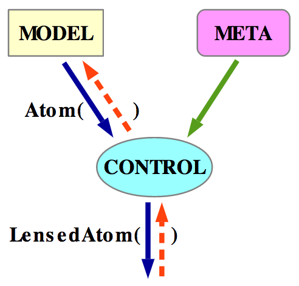

Keep Calmm and React!
Vesa Karvonen
About Me
- Senior programmer — daily hobby 1990-, work 1996-
- Polyglot — Asm, C++, ML, Java, Scheme, C#, Swift, JS, ...
- Multi-paradigm — OO, FP (01), concurrent, reactive, logic, ...
- Multi-platform — 16-bit, PC, Dreamcast, Mobile, Web, ...
But really
My special interest
Programming languages and techniques
``it is possible to make the structure of the program match the structure of the problem being solved.´´ — Burge
Calmm? (1/2)
- Architecture and libs for writing reactive UIs
- CMS project at a client
- Not just another React utility library: unified story
- A combination of old concepts:
observables, VDOM++, atoms, lenses - Nothing new! e.g. WebSharper UI.Next
- Juha Paananen and Matti Lankinen
Calmm? (2/2)


Goals
- See state and UI programming in new ways 🤔
- See modern functional programming 😎
- Get you interested to try Calmm 😏
Show me the Code!
Some live coding magic!
Ingredients and Principles
Some Non-Ingredients
- Class Components
this- Local state (
setState) - Streams of events (
merge,scan, ...)
Ingredients
- Observables — stay consistent by construction
- Reactive VDOM — compose UI and eliminate manual subscription
- Atoms — flexible state storage
- Lenses — decompose state giving reusable components
Guiding principles
- Structural programming
- Composability
- Decomposability
Taking toll
Properties
- Consistent — views stay consistent with state by construction
- Concise — often 2x-4x less code vs more popular alternatives
- Efficient — typically performs nearly optimal VDOM updates
- Declarative — applicative combinations of properties are stateless
- Flexible with state — choose between local and global state
Compared to
- WebSharper UI.Next
- React (
setState) — lures you to dark side: local state - Cycle.js — streams lure you to local state
- Reagent ( Knockout.js )
- Atoms, but no lenses — non-compositional
- Rerenders more (dependency hack)
- Redux or Elm
- Everything is global state — can be inconvenient
- Actions
- Asynchrony — cottage industry of extensions
- Compositional? Decompositional?
Conclusion
Lessons
- Think about where you want to store state
- And how to keep components consistent with state
Calmm Future Work
- Support multiple VDOMs
- Validation utility library
- More documentation and examples
- Support other observable libraries
- Upcoming talks: 10.5. Reaktor meetup: What is my state?